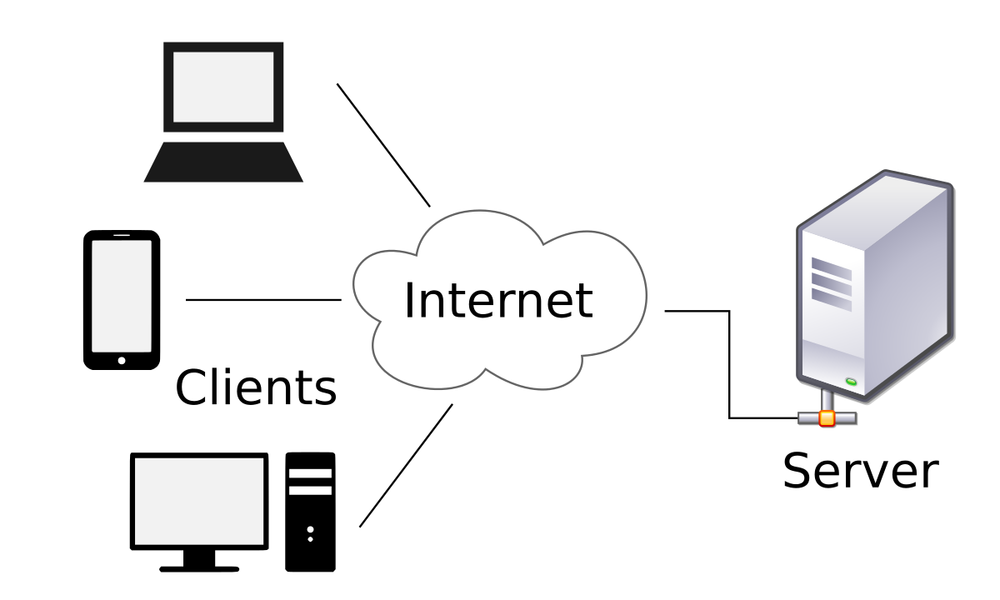

Introducción

La tecnología cliente-servidor es un modelo fundamental en la informática moderna que permite la comunicación y la distribución de tareas entre varios dispositivos conectados a una red. Este enfoque separa las funciones entre los clientes, que solicitan servicios, y los servidores, que los proporcionan. A lo largo de los años, ha demostrado ser una arquitectura eficaz y escalable, utilizada en una variedad de aplicaciones, desde sitios web hasta sistemas empresariales complejos.
En esta página, exploraremos en profundidad cómo funciona la tecnología cliente-servidor, sus ventajas y desventajas, así como su importancia en la administración de sistemas, donde garantizar un flujo eficiente de información y mantener la seguridad son prioridades clave.